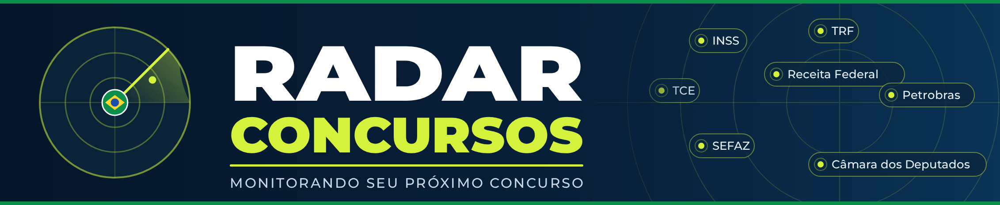

🇧🇷 Nacional
🏛️ Estadual
🏙️ Municipal
Estado (UF)
Município
Tipo
Todos
Abertura
Previsto
Alteração
Resultado
Notícia
Modalidade
Todas
Concurso
Processo seletivo
Estágio
Escolaridade
Todas
Fundamental
Médio
Técnico
Superior
Ordenar por
Mais recentes
Mais vagas
Maior salário
Atualizar
Limpar
0
resultados
📢 Edital Aberto
🕓 Edital Previsto
📰 Notícias e links (resultados, alterações e avisos)